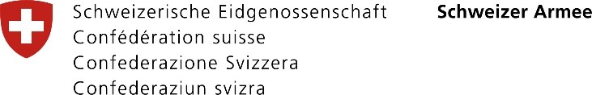

Bildungs- und Kompetenznachweis
Die Schweizer Armee bestätigt hiermit, dass
{{User.FirstLastName}}
geboren am {{User.Birthdate | Date: "dd.MM.yyyy"}} die folgende militärische Dienstleistung absolviert hat:
| Militärdienst bei: |
{{User.Text1}} |
| Zeitraum: |
{{DateAcquired | Date: "dd.MM.yyyy"}} - {{ValidUntil | Date: "dd.MM.yyyy"}} |
| Funktion: |
Büroordonnanz |
| Grad: |
Soldat |
Ich danke Soldat {{User.FirstLastName}} für sein Engagement zugunsten der Schweizer Armee und wünsche ihm
für seine zukünftige berufliche Tätigkeit viel Erfolg und Zufriedenheit.
Fliegerbrigade 31

Brigadier Peter Bruns
Kommandant
Dieser Bildungs- und Kompetenznachweis ist transparent und enthält somit keine versteckten Informationen
Er hat während der Rekrutenschule in Theorie und Praxis folgende Kompetenzen erworben:
| Kompetenzen |
Inhalt / Anwendungsbereich |
|
Eigenverantwortung
|
Durch das Zusammenleben in seiner militärischen Einheit musste er Verantwortung für sich und andere
innerhalb der Gruppe übernehmen.
|
|
Loyalität
|
Während der Dienstdauer lebte er nach gemeinschaftlichen Werten, sozialen Normen sowie
gruppenspezifischen Regeln.
|
|
Belastbarkeit
|
In der Rekrutenschule durchlebte er Phasen erhöhter physischer sowie psychischer Belastung. Er hielt
diesen erschwerten Bedingungen stand und konnte sich auf das Wesentliche fokussieren.
|
|
Lern- und Anpassungs-fähigkeit (Flexibilität)
|
Dank seiner Lern- und Anpassungsfähigkeit integrierte er sich in ein für ihn ungewohntes Umfeld.
|
|
Kritik- und Konfliktfähigkeit
|
Unter erhöhtem physischem und/oder psychischem Stress war Kritik- und Konfliktfähigkeit gefragt.
|
|
Teamfähigkeit
|
Gemeinsame Aufgaben, Ziele und Erlebnisse stärkten die gegenseitige Rücksichtnahme und
Wertschätzung.
|
|
Sozialkompetenz
|
Menschen unterschiedlicher Herkunft, Sprache, verschiedener Kulturen, Geschlechter, Religionen sowie
sozialer Stellung begleiteten ihn wäh-rend seiner Dienstzeit und forderten/förderten seine
Sozialkompetenz.
|
|
Fachtechnische Kompetenzen
|
|
Sie hat in der Fachausbildung folgende Module absolviert:
|
- Human Factors / Flight Safety
- Ground Handling Signals
- Dokumentation, Administration
- Landing Gear / Related Systems
- Power Plant EL
- Electrical Power System
- Hydraulic Power EL
- Flight Aids
- WBCR Wire Bundle Connector Repair
|
Einführung und Verhalten auf einem Flugplatz
Einführung an der F/A-18 Hornet
Spezifische Grundkenntnisse
Secondary Power System EL
Power Plant Related Systems
Lighting System
Fuel System
Flight Control System EL
Flugzeug Kompass Kalibrierung
|
|
Zu ihrem Aufgabenbereich gehörten folgende Tätigkeiten:
- Anwendung von fachspezifischen Begriffen in der englischen Sprache
- Instandhaltung sowie Instandsetzung des gesamten Elektro-, Beleuchtungs- und Flugzeugssteuerungssystems
vor und nach dem Flug
- Arbeiten gemäss Checklisten und Herstellervorgaben
Im Rahmen der Selbst- und Kameradenhilfe hat er die Ausbildung zum Nothelfer erhalten.
Die Schweizer Armee führt in regelmässigen Abständen PersonensicherheitsÜberprüfungen durch. Bei
der ersten Überprüfung zum Zeitpunkt seiner Rekrutierung hat er die Sicherheitsprüfung
bestanden.
|